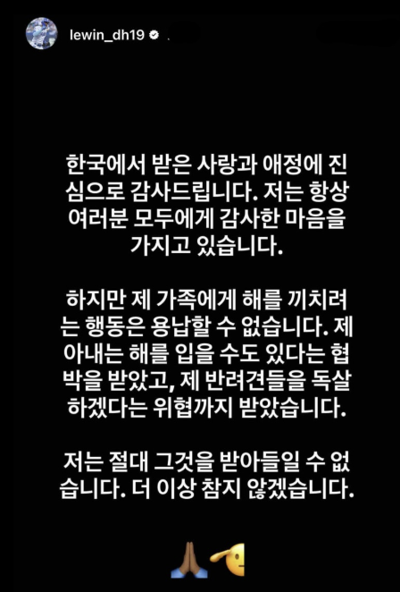

팬심을 가장한
폭력
응원과 폭력은 다릅니다. 최고의 활약을 펼치던 한 선수가 가족을 향한 협박에 목소리를 냈습니다. 스포츠를 사랑하는 우리는 '팬심'이라는 이름 아래 어디까지 허용해도 되는 걸까요?
디아즈 선수의 호소
2025년 8월, 삼성 라이온즈 디아즈 선수의 인스타그램 스토리가 화제가 되었습니다. 그는 한국 팬들의 사랑에 감사를 전하면서도, 자신의 가족을 향한 위협에는 단호했습니다.
인용 ▸ "한국에서 받은 사랑과 애정에 진심으로 감사드립니다. 하지만 제 가족에게 해를 끼치려는 행동은 용납할 수 없습니다. 제 아내는 해를 입을 수도 있다는 협박을 받았고, 제 반려견들을 독살하겠다는 위협까지 받았습니다. 저는 절대 그것을 받아들일 수 없습니다."
몇몇 몰상식한 팬들이 선수의 가족을 위협하는 메시지를 보낸 것으로 보입니다.

최고의 활약, 그러나…
디아즈 선수는 지난해 대체 용병으로 입단해 플레이오프에서 엄청난 활약을 보였고, 이 시즌에도 홈런·타점 부문 1위를 달리며 올스타에 뽑히는 등 팬들의 사랑을 한 몸에 받고 있었습니다. 이런 맹활약에도 불구하고 '팬심을 가장한 폭력'이 벌어졌다는 사실이 더욱 안타깝습니다.
낯설지 않은 일
사실 이런 일은 처음이 아닙니다. 과거 삼성 라이온즈 김헌곤 선수도 가족을 위협하는 DM을 받아 악질적인 악플러들을 고소한 적이 있습니다. 이 외에도 선수의 일상을 몰래 찍어 온라인에 올리는 행동을 하는 이들도 있습니다.
경기장 안에서 선수를 응원하는 것은 좋지만, 경기 없는 날의 사생활—누구와 술을 마시고 누구를 만나는지—까지 가십처럼 소비하는 것은 안타까운 일입니다. 선수의 몸 관리는 프로로서 스스로의 몫이며, 팬은 아쉬운 마음을 가질 수는 있어도 가족을 향한 비난과 위협은 명백한 폭력임을 알고 멈춰야 합니다.
📌 3줄 요약
- 맹활약 중이던 삼성 디아즈 선수가 가족을 향한 협박에 공개적으로 목소리를 냈다.
- 과거 김헌곤 선수 사례 등, 팬을 가장한 위협과 사생활 침해는 반복되어 온 문제다.
- 응원과 폭력은 다르며, 선수 가족을 향한 비난·위협은 명백한 폭력이다.
생각해보기 ▸ '팬심을 가장한 행동'은 어디까지 허용되어야 할까요? 좋아하는 마음과 상대를 존중하는 태도는 어떻게 함께 갈 수 있을까요?